De Casteljau's algorithm is a recursive algorithm that takes any number of points and reduces it eventually to one single point. By essentially lerping them together, you get a "control" point that lets you control the shape of the curve, bounded by each end by the first and last point.
To implement one step of the algorithm, I looped through each point in the input array of points and lerped each two (e.g. b0 + b1, b1 + b2) together with the input parameter t, making sure that the resulting array was one less than the input array. Then, I returned it.
| 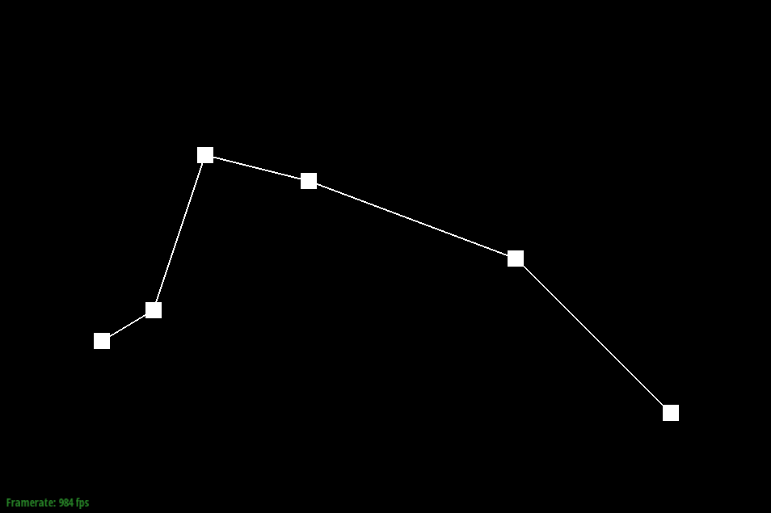 | 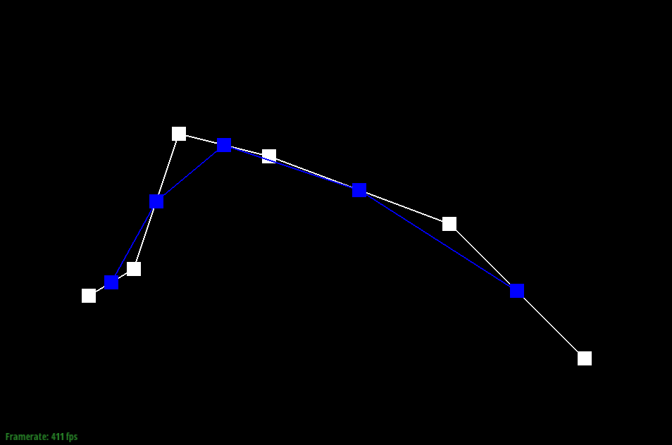 | 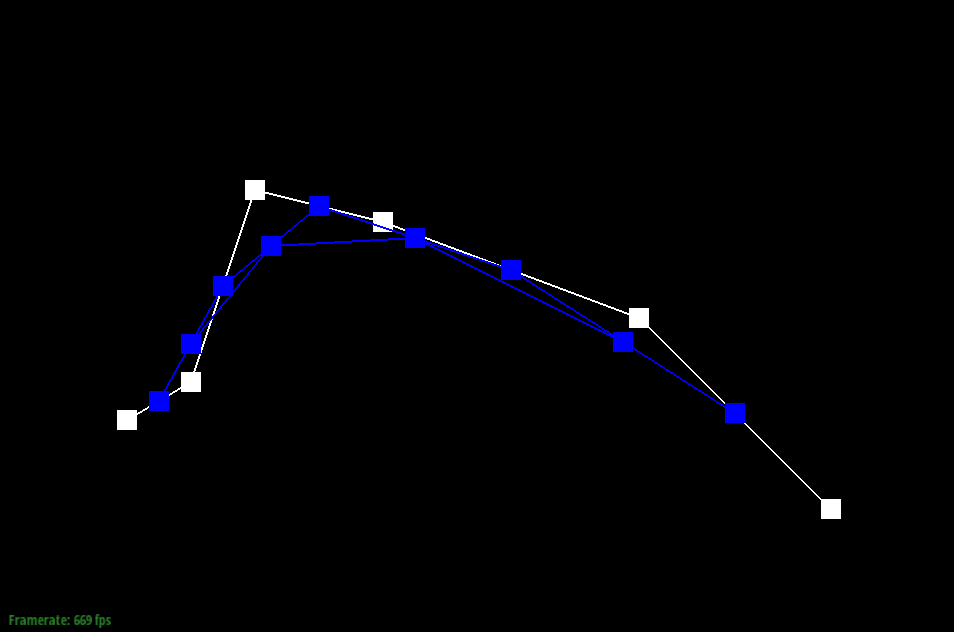 |
| 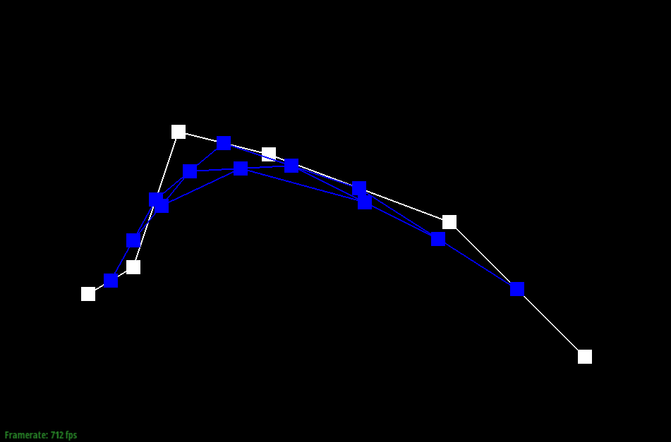 | 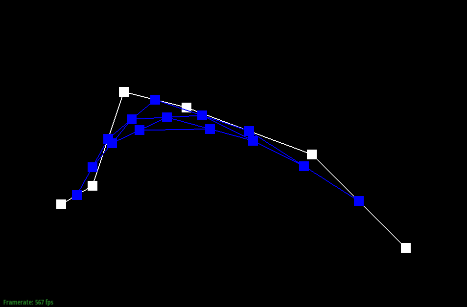 | 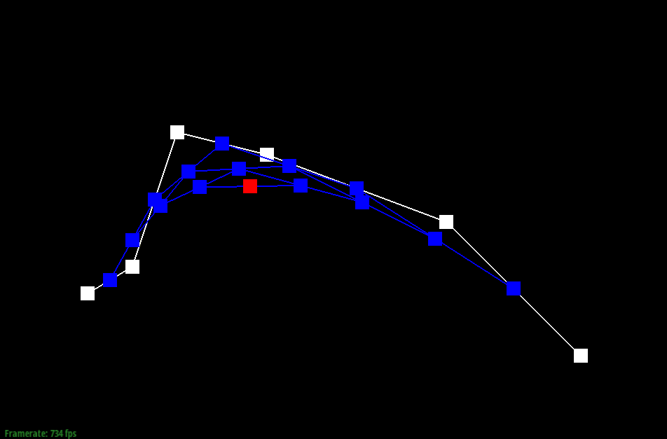 |
The de Casteljau algorithm can be extended to Bezier surface like so: first, along one axis/line/one set of curves (as detailed in part 1), we evaluate the point on that line to get a "moving" Bezier curve. Then, using the resulting lines from each set of points, run de Casteljau again to find a singular control point for the entire surface. I implemented this by running de Casteljau's over the inputted Vector3D until I got a singular curve, then ran it one more time to get a final point.
I implemented area-weighted vertex normals by first iterating through all the faces around a vertex. I got all the vertex positions for that triangle, then calculated the area. Then, I used the norm of the face to find the weighted norm. I added all of them together and normalized the entire thing, then returned the result.
| 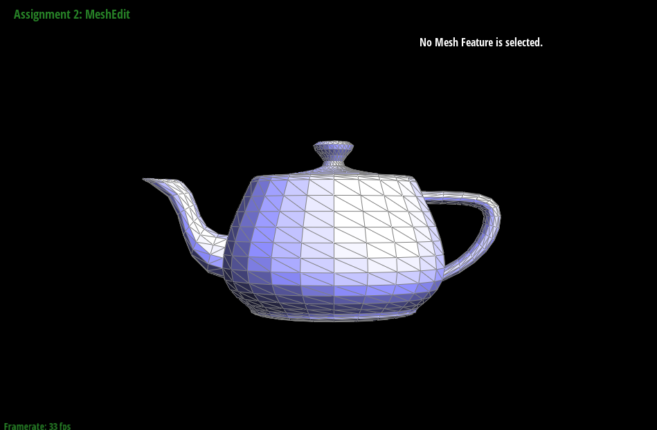 | 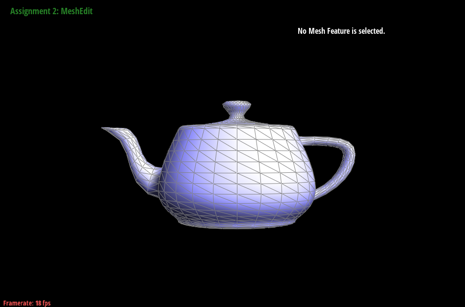 |
I implemented the edge flip operation by essentially following the diagram in the linked pdf guide. I first fetched all the elements I would or potentially would manipulate. Then, I reassigned all the pointers to the different components to create a flip. Then, I got rid of reassignments that I didn't need to perform the flip. Debugging this section was not very difficult. I just had to be very careful when reassigning pointers to make sure I was being thorough and accurate.
| 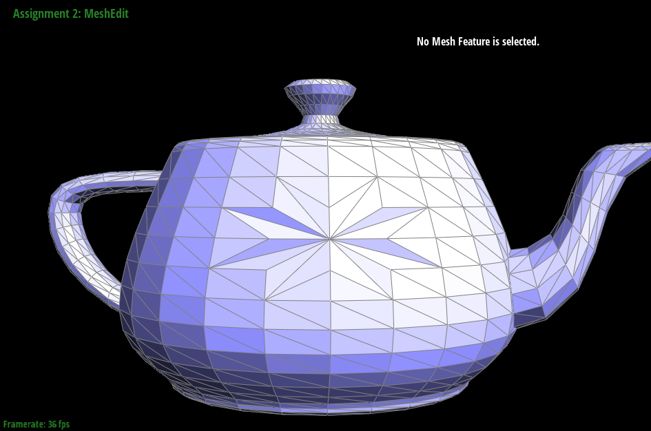 |
I implemented this similarly to the previous section, by writing out what elements I needed to change, reassigning pointers, getting rid of unneccessary pointers, and debugging. The biggest trip up I had with this part was not assigning my pointers perfectly the first time. It took me far longer to debug than I would've liked.
| 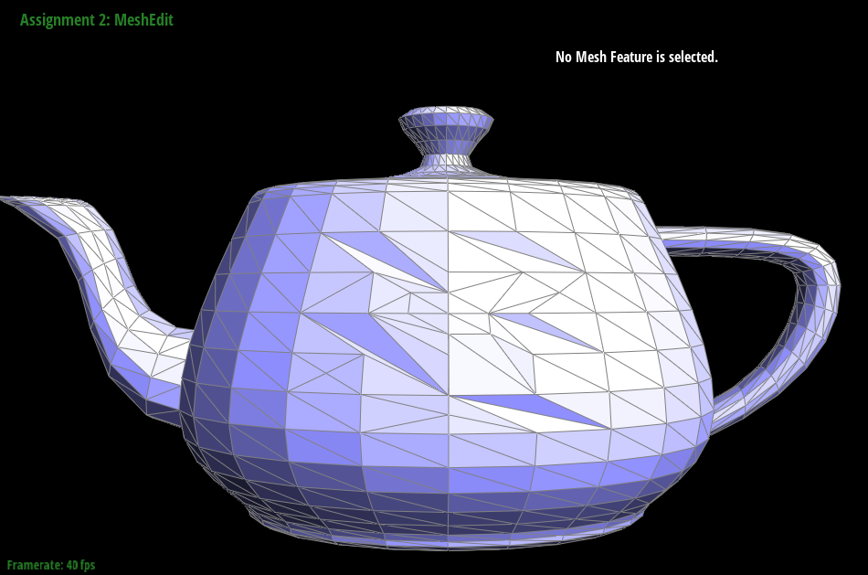 |
This section took me the longest, by far. Technically speaking, the implementation was not that bad. I iterated through my vertices and calculated the new positions, then iterated through the edges to calculate the midpoints/new split vertex positions. One interesting thing I did was create an array (or at least a std::vector) to hold all the original edges when I went through and split them so that I wouldn't be caught in a loop of making new edges over and over again. I also had to go back and edit my old code to make sure the correct edges/vertices were being set to new or old. Then, I looped through the edges again to flip them and set them all to old. Finally, I looped through the vertices to update their positions and set them to old.
The biggest bug I faced in this section was an incredibly simple one. Here it is. I was checking my xor conditions with ^= instead of ^. That's it. Once I fixed that, everything ran flawlessly.
After loop subdivision, meshes tend to become rounder and less defined around the sharp edges and corners. This is most visible in cube.dae, which becomes very blobby and misshapen. By pre-splitting edges closer to the corners, you're able to retain more of that sharp behavior. You can also pre-process the cube so that it divides more symmetrically, at least in terms of overall shape. I think the reason why it becomes misshapen and round is because when the weighted positions of the new vertices are being calculated, other vertices that are further away will very greatly affect the position of the vertex, moreso than close ones. By creating more subdivisions closer to the location of the vertex in question, the resulting weighted position is closer to the original position, thus retaining shape and symmetry.
| 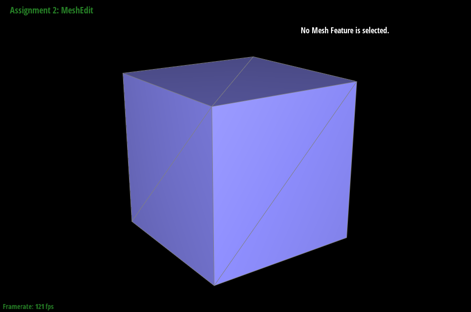 | 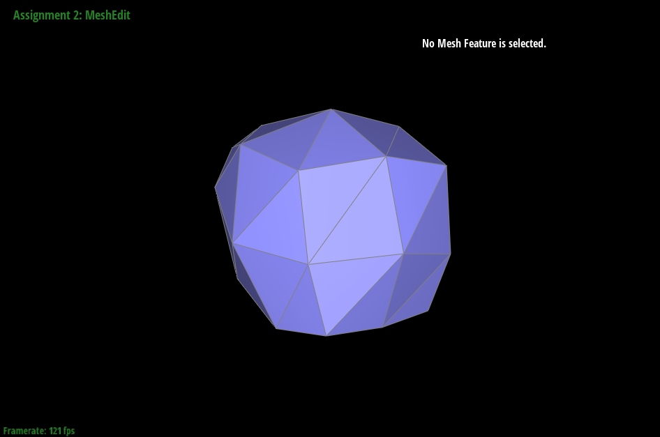 |
| 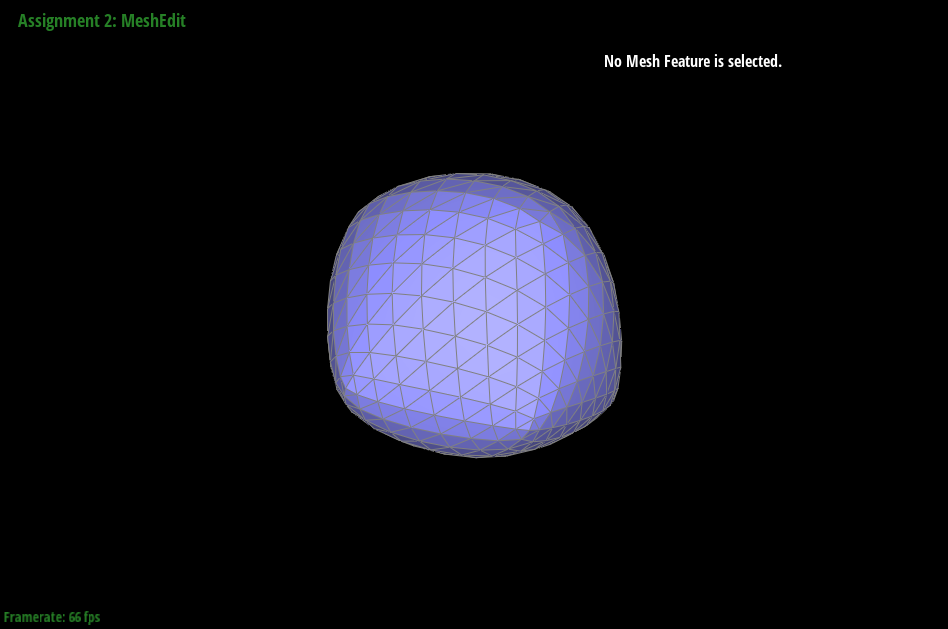 | 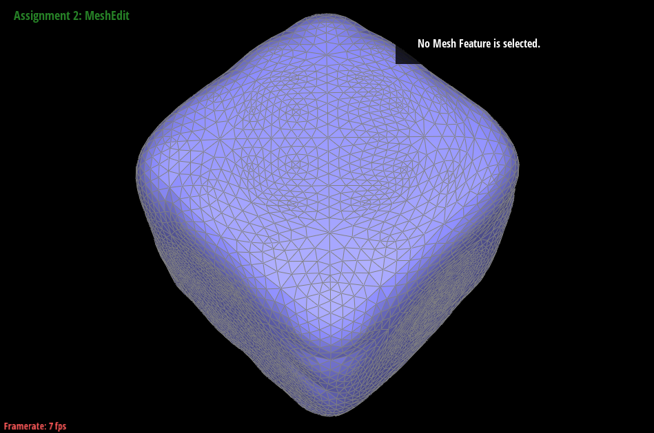 |
In my opinion, without preprocessing, the cube just looks like a misshapen blob. Afterwards, it at least has a cubish shape.